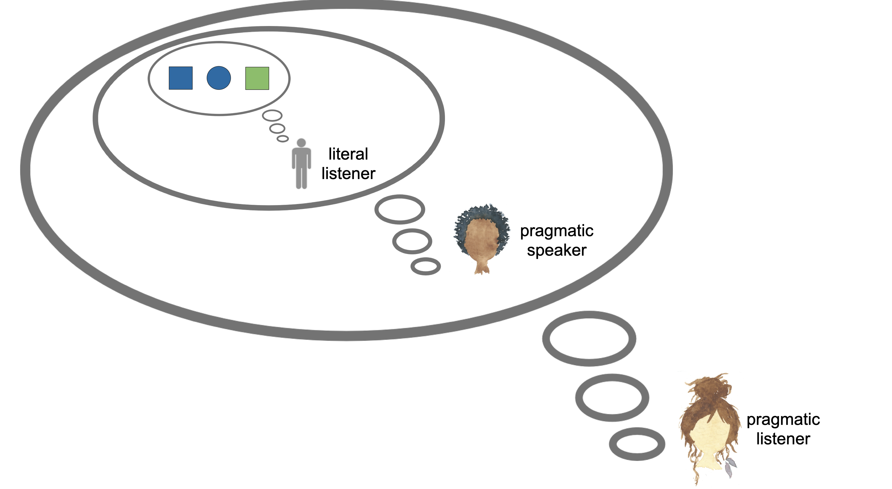
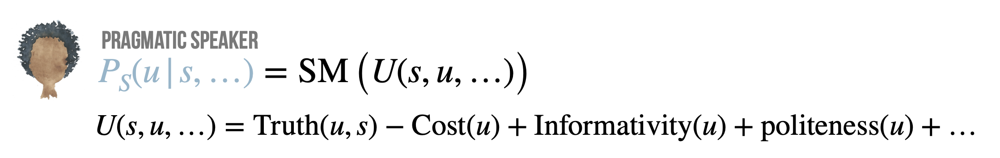

Probabilistic pragmatics
Contents
Probabilistic pragmatics#
Probabilistic pragmatics is an approach to modelling a speaker’s choice of expression and a listener’s interpretation thereof, using tools from Bayesian decision theory. In simplified terms: the listener uses Bayes rule to infer (abduct) the most likely state that could have led the speaker to act in the way they did; the speaker chooses an expression that increases the chance that the listener (usually, to avoid circularity: under a literal interpretation) comes to belief the things that the speaker wants the listener to belief.

We will cover two models: one is vanilla RSA applied to a reference game; the other is an extension of the vanilla model to include reasoning about politeness.
The main learning goal is to see more clearly how we can define speaker behavior in terms of an optimization of different components in a numeric measure of “utility” of an expression:

It is this idea (“numeric measures of pragmatic utilities”) that we will want to carry over to look at loss functions for training, decoding objectives, or experimental evaluation later on in the context of neural language models.
Slides#
Here are the slides on vanilla RSA. And here the slides on RSA with politeness.
Practical exercises#
There are two notebooks for exercises: one on vanilla RSA, the other on RSA with politeness. You can also find the extracted Python code for both notebooks on the GitHub repository for this web-book.
Further reading#
The key reference for the Rational Speech Act model (applied to reference games) is this paper:
Frank, M. C., & Goodman, N. D. (2012). Predicting pragmatic reasoning in language games. Science, 336(6084), 998. http://dx.doi.org/10.1126/science.1218633
If you like to explore RSA models computationally, using probabilistic programming language webPPL, check out this online resource:
Scontras, G., Tessler, M. H., & Franke, M. (2018). Probabilistic language understanding: An introduction to the Rational Speech Act framework.
This web-book comes with a companion paper (providing better high-level overview, discussion recent applications, including those in computational linguistics):
Scontras, G., Tessler, M. H., & Franke, M. (2021). A practical introduction to the rational speech act modeling framework.
Here are other overview papers (with different emphasis):
overview paper targeting a psych / cog-sci audience:
Goodman, N. D., & Frank, M. C. (2016). Pragmatic language interpretation as probabilistic inference. Trends in Cognitive Sciences, 20(11), 818–829. http://dx.doi.org/10.1016/j.tics.2016.08.005Au
overview papers targeting a linguistic audience:
Franke, M., & Gerhard Jäger (2016). Probabilistic pragmatics, or why Bayes’ rule is probably important for pragmatics. Zeitschrift für Sprachwissenschaft, 35(1), 3–44. http://dx.doi.org/10.1515/zfs-2016-0002
Stevens, J., & Benz, A. (2018). Game-theoretic approaches to pragmatics. Annual Review of Linguistics, 4(), 173–191. http://dx.doi.org/10.1146/annurev-linguistics-011817-045641
overview paper covering related game-theoretic approaches (with R code):
Franke, M. (2017). Game theory in pragmatics: evolution, rationality & reasoning. In: Oxford Research Encyclopedia of Linguistics. Oxford University Press.